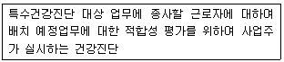
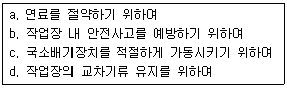
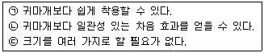
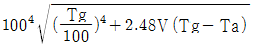
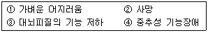

산업위생관리기사 (2010-07-25 기출문제)
1과목: 산업위생학개론
1. 다음 중 재해의 원인에서 불안전한 행동에 해당하는 것은?
- 보호구 미착용
- 방호장치 미설치
- 시끄러운 주위 환경
- 경고 및 위험표지 미설치
(정답률: 93%)

2. 산업안전보건법상 다음 설명에 해당하는 건강진단의 종류는?

- 배치전건강진단
- 일반건강진단
- 수시건강진단
- 임시건강진단
(정답률: 96%)
3. 다음 중 위생산업의 정의에 있어 중요 4가지 활동요소에 해당하지 않는 것은?
- 예측
- 인식
- 제시
- 관리
(정답률: 79%)
4. 15℃ 을 유지해야 하는 PCB회로 기판 조립라인에서 탈지작업을 위해 트리클로로에틸렌(TCE)을 사용한다. 탈지조에서 방출되는 TCE의 작업환경측정 농도가 150mg/m3이었다면, 이 농도의 ppm농도는 약 얼마인가? (단, TCE의 분자량은 131.39이다.)
- 17.12
- 25.57
- 26.97
- 27.91
(정답률: 58%)
5. 다음 중 사무실 공기관리 지침상 관리대상 오염물질의 종류에 해당하지 않는 것은?(2020년 01월 개정된 규정 적용됨)
- 일산화탄소(CO)
- 호흡성분진(RSP)
- 라돈
- 총부유세균
(정답률: 75%)
6. 국소피로의 평가방법에 있어 EMG를 이용한 결과에서 피로한 근육에 나타나는 현상으로 틀린 것은?
- 저주파주(0~40Hz) 영역에서 힘(전압)의 증가
- 고주파주(40~200Hz) 영역에서 힘(전압)의 감소
- 평균 주파주 영역에서 힘(전압)의 감소
- 총전압의 감소
(정답률: 75%)
7. 다음 중 재해예방의 4원칙에 관한 설명으로 틀린 것은?
- 재해발생과 손실의 발생은 우연적이므로 사고 발생 자체의 방지가 이루어져야 한다.
- 재해발생에는 반드시 원인이 있으며, 사고와 원인의 관계는 필연적이다.
- 재해는 원칙적으로 예방이 불가능하므로 지속적인 교육이 필요하다.
- 재해예방을 위한 가능한 안전대책은 반드시 존재한다.
(정답률: 85%)
8. 다음 중 교대근무제에 관한 설명으로 옳은 것은?
- 누적 피로를 회복하기 위해서는 정교대 방식보다는 역교대 방식이 좋다.
- 야간근무 종료 후 휴식은 24시간 전후로 한다.
- 야간 근무 시 가면(假眠)은 반드시 필요하며 보통 2~4시간이 적합하다.
- 신체적 적응을 위하여 야간근무의 연속일 수는 대략 1주일로 한다.
(정답률: 75%)
9. 다음 중 시대별 산업위생의 역사가 올바르게 연결된 것은?
- B.C. 4세기 : 광산에서의 폐질환 보고
- A. D. 2세기 : 아연, 황의 유해성 주장
- 1473년 : 작업병과 위생에 관한 교육용 팜플렛 발간
- 18세기 : 수은중독에 의한 직업성 암을 최초 보고
(정답률: 39%)
10. 근골격계질환 평가 방법 중 JSI(Job Strain Index)에 대한 설명 중 틀린 것은?
- JSI 평가결과의 점수가 7점 이상은 위험한 작업으로 즉시 작업개선이 필요한 작업으로 관리기준을 제시하게 된다.
- 평가과정은 지속적인 힘에 대해 5등급으로 나누어 평가하고, 힘이 필요로 하는 작업의 비율, 손목의 부적절한 작업자세, 반복성, 작업속도, 작업시간 등 총 6가지 요소를 평가한 후 각각의 점수를 곱하여 최종 점수를 산출하게 된다.
- 주로 상지작업 특히 허리와 팔을 중심으로 이루어지는 작업에 유용하게 사용할 수 있다.
- 이 평가방법은 손목의 특이적인 위험성만을 평가하고 있어 제한적인 작업에 대해서만 평가가 가능하고, 손, 손목 부위에서 중요한 진동에 대한 위험요인이 배제되었다는 단점이 있다.
(정답률: 49%)
11. 다음 중 산업안전보건법에 따라 제조ㆍ수입ㆍ양도ㆍ제공 또는 사용이 금지되는 유해물질에 해당되지 않는 것은?
- 정석면 및 갈석면
- 베릴륨
- 황린(黃燐) 성냥
- 폴리클로리네이티드터페닐(PCT)
(정답률: 50%)
12. 화학물질 및 물리적인자의 노출기준에 있어 용접 또는 용단시 발생되는 용접흄이나 분진의 노출기준으로 옳은 것은?
- 1mg/m3
- 2mg/m3
- 5mg/m3
- 10mg/m3
(정답률: 46%)
13. 다음 중 실내공기의 오염에 따른 건강상의 영향을 나타내는 용어와 가장 거리가 먼 것은?
- 새차증후군
- 화학물질과민증
- 헌집증후군
- 스티븐존슨 증후군
(정답률: 83%)
14. 어느 근로자의 1시간 작업에 소요되는 에너지가 500kcal이었다면, 작업대사율은 약 얼마인가? (단, 기초대사량은 60kcal/h, 안정시 소비되는 에너지는 기초대사량의 1.2배로 가정한다.)
- 4.7
- 5.4
- 6.4
- 7.1
(정답률: 59%)
15. 다음 중 산업 스트레스의 반응에 따른 심리적 결과에 대한 내용으로 틀린 것은?
- 돌발적 사고
- 가정문제
- 수면방해
- 성(性)적 역기능
(정답률: 77%)
16. 다음 중 근육이 운동을 시작했을 때 에너지를 공급받는 순서가 올바르게 나열된 것은?
- 아데노신삼인산(ATP) → 크레아틴인산(CP) → 글리코겐
- 크레아틴인산(CP) → 글리코겐 → 아데노신삼인산(ATP)
- 글리코겐 → 아데노신삼인산(ATP) → 크레아틴인산(CP)
- 아데노신삼인산(ATP) → 글리코겐 → 크레아틴인산(CP)
(정답률: 84%)
17. 다음 중 노동의 적응과 장애에 관한 설명으로 틀린 것은?
- 직업에 따라 일어나는 신체 형태와 기능의 국소적 변화를 직업성 변이라고 한다.
- 작업환경에 대한 인체의 적응 한도를 서한도라고 한다.
- 일하는데 가장 적합한 환경을 지적환경이라고 한다.
- 지적환경의 평가는 생리적, 정신적, 육체적 평가방법으로 행한다.
(정답률: 54%)
18. 미국산업위생학술원에서 채택한 산업위생전문가의 윤리강령에 있어 근로자에 대한 책임, 기업주와 고객에 대한 책임, 일반 대중에 대한 책임, 전문가로서의 책임 중 기업주와 고객에 대한 책임과 관계된 윤리강령은?
- 근로자, 사회 및 전문 직종의 이익을 위해 과학적 지식을 공개하고 발표한다.
- 결과와 결론을 뒷받침할 수 있도록 기록을 유지하고 산업위생사업을 전문가답게 운영, 관리한다.
- 전문적 판단이 타협에 의하여 좌우될 수 있는 상황에는 개입하지 않는다.
- 기업체의 기밀은 누설하지 않는다.
(정답률: 71%)
19. 물체무게가 2kg이고, 권고중량한계가 4kg일 때 NIOSH의 중량물 취급지수(LI, Lifting Index)는 얼마인가?
- 8
- 5
- 2
- 0.5
(정답률: 77%)
20. 다음 중 유해인자와 그로 인하여 발생되는 직업병이 올바르게 연결된 것은?
- 크롬 - 간암
- 이상기압 - 침수족
- 석면 - 악성중피종
- 망간 - 비중격천공
(정답률: 81%)
2과목: 작업위생측정 및 평가
21. 다음의 유기용제 중 실리카겔에 대한 친화력이 가장 강한 것은?
- 방향족 탄화수소류
- 알콜류
- 케톤류
- 에스테르류
(정답률: 91%)
22. 유량, 측정시간, 회수율 및 분석 등에 의한 오차가 각각 10%, 4%, 7% 및 5%일 때의 누적오차는?
- 13.8%
- 15.4%
- 17.6%
- 19.3%
(정답률: 80%)
23. 20℃, 1기압에서 에틸렌글리콜의 증기압이 0.⑤mHg라면 공기 중 포화농도(ppm)는?
- 약 62
- 약 66
- 약 72
- 약 76
(정답률: 77%)
24. 측정결과의 통계처리에서 산포도 측정방법에는 변량 상호간의 차이에 의하여 측정하는 방법과 평균값에 대한 변량의 편찿에 의한 측정방법도 있다. 다음 중 변량 상호간의 차이에 의하여 산포도를 측정하는 방법으로 가장 옳은 것은?
- 변이계수
- 분산
- 범위
- 표준편차
(정답률: 48%)
25. 다음 중 미국 ACGIH에서 정희한 (A) 흉곽성 먼지(Thoracic particulate mass, TPM)와 (B) 호흡성 먼지(Respriable particulate mass, RPM)의 평균입자크기로 옳은 것은?
- (A) 5μm, (B) 15μm
- (A) 15μm, (B) 5μm
- (A) 4μm, (B) 10μm
- (A) 10μm, (B) 4μm
(정답률: 85%)
26. 1/1 옥타브 밴드 중심주파수가 31.5Hz 일 때 하한 주파수는?
- 20.4
- 22.4
- 24.4
- 26.4
(정답률: 68%)
27. 표준상태(25℃, 1기압)의 작업장에서 Toluene(MW : 92)을 활성탄관을 이용하여 유량 0.25ℓ/분으로 200분간 채취하여 GC로 분석을 하였다. 분석결과 활성탄관 100mg층에서 3.3mg이 검출되었고, 50mg층에는 0.1mg이 검출되었다. 탈착효율이 95%일 때 공기 중 Toluene의 농도는? (단, 공시료는 고려하지 않음)
- 59.0mg/m3
- 62.0mg/m3
- 71.6mg/m3
- 83.6mg/m3
(정답률: 63%)
28. 음원이 아무런 방해물이 없는 작업장 중앙 바닥에 설치되어 있다면 음의 지향계수(Q)는?
- 1
- 2
- 3
- 4
(정답률: 52%)
29. 알고 있는 공기중 농도를 만드는 방법인 Dynamic Method의 장점으로 옳지 않은 것은?
- 온습도 조절 가능함
- 소량의 누출이나 벽면에 의한 손실은 무시할 수 있음
- 다양한 실험이 가능함
- 만들기가 간단하고 경제적임
(정답률: 82%)
30. 열, 화학물질, 압력 등에 강한 특징이 있어 석탄건류나 중류 등의 고열공정에서 발생하는 다핵방향족탄화수소를 채취하는데 이용되는 막여과지는?
- 은 막여과지
- PTFE 막여과지
- PVC 막여과지
- MCE 막여과지
(정답률: 85%)
31. 금속 도장 작업장의 공기 중에 Toluene(TLV = 100ppm) 45ppm, MIBK(TLV = 50ppm) 15ppm, Acetone(TLV = 750ppm) 280ppm, MEK(TLV = 200ppm) 80ppm 으로 발생되었을 때 이 작업장 노출지수(EI)는? (단, 상가 작용 기준)
- 1.223
- 1.323
- 1.423
- 1.523
(정답률: 74%)
32. 2차 표준기구(유량측정)와 가장 거리가 먼 것은?
- 건식가스 미터
- 유리 피스톤 미터
- 오리피스미터
- 열선기류계
(정답률: 71%)
33. 태양광선이 내리 쬐는 옥외작업장에서 작업강도 중등도의 연속작업이 이루어질 때 습구흑구온도지수 (WBGT)는? (단, 건구온도 : 30℃, 자연습구온도 : 28℃, 흑구온도 : 32℃)
- WBGT : 27.0℃
- WBGT : 28.2℃
- WBGT : 29.0℃
- WBGT : 30.2℃
(정답률: 79%)
34. 가스상 물질의 측정을 위한 수동식 시료 채취기(Passive sampler)에 관한 설명으로 옳지 않은 것은?
- 채취 원리는 Fick's 확산 제 1 법칙으로 나타낼 수 있다.
- 장점은 간편성과 편리성이다.
- 유량이라는 표현 대신에 채취속도(SR)로 표시한다.
- 펌프를 수동으로 간단히 작동하게 함으로서 효과적인 채취가 가능하다.
(정답률: 44%)
35. 화학공장의 작업장 내에 먼지 농도를 측정하였더니 5, 7, 5, 7, 6, 6, 4, 3, 9, 8ppm이었다. 이러한 측정치의 기하평균(ppm)은?
- 5.43
- 5.53
- 5.63
- 5.73
(정답률: 78%)
36. 정량한계(LOQ)에 관한 설명으로 옳은 것은?
- 표준편차의 2배로 정의
- 표준편차의 3배로 정의
- 표준편차의 5배로 정의
- 표준편차의 10배로 정의
(정답률: 89%)
37. 활성탄의 제한점에 관한 설명으로 옳지 않은 것은?
- 휘발성이 큰 저분자량의 탄화수소 화합물의 채취효율이 떨어짐
- 암모니아, 에틸렌, 염화수소와 같은 저비점 화합물에 비효과적임
- 표면 산화력으로 인해 반응성이 작은 mercaptan과 aldehyde 포집에 부적합함
- 비교적 높은 습도는 활성탄의 흡착용량을 저하시킴
(정답률: 60%)
38. 석면분석방법인 전자 현미경법에 관한 설명으로 옳지 않은 것은?
- 공기중 석면시료분석에 가장 정확한 방법이다.
- 전자를 주사하여 석면의 고유한 편광성을 측정한다.
- 위상차현미경으로 볼 수 없는 매우 가는 섬유도 관찰이 가능하다.
- 석면의 감별분석이 가능하다.
(정답률: 82%)
39. 일정한 압력조건에서 부피와 온도가 비례한다는 표준가스 법칙은?
- 보일의 법칙
- 샤를의 법칙
- 게이-루삭의 법칙
- 라울트의 법칙
(정답률: 63%)
40. 종단속도가 0.432m/hr인 입자가 있다. 이 입자의 직경이 3cm 라면 비중은 얼마인가?
- 0.44
- 0.55
- 0.66
- 0.77
(정답률: 62%)
3과목: 작업환경관리대책
41. 재순환 공기의 CO2농도는 900ppm이고, 급기의 CO2농도는 700ppm이었다. 급기 중의 외부공기 포함량은? (단, 외부공기의 CO2농도는 330ppm이다.)
- 45%
- 40%
- 35%
- 30%
(정답률: 69%)
42. 유입계수 Ce = 0.82인 원형 후드가 있다. 덕트의 원면적이 0.0314m2이고 필요 환기량 Q는 30m3/min이라고 할 때 후드정압은? (단, 공기밀도 1.2kg/m3 기준)
- 16
- 23
- 32
- 37
(정답률: 69%)
43. 전기집진기의 장점에 관한 설명으로 옳지 않은 것은?
- 낮은 압력손실로 대량의 가스를 처리할 수 있다.
- 건식 및 습식으로 집진할 수 있다.
- 회수가치성이 있는 입자 포집이 가능하다.
- 설치 후에도 운전조건 변화에 따른 유연성이 크다.
(정답률: 64%)
44. 어느 작업장에서 Methyl Ethyl Ketone을 시간당 2.5리터 사용할 경우 작업장의 필요 환기량(m3/min)은? (단, MEK의 비중은 0.8⑤, TLV는 200ppm, 분자량은 72.1이고 안전계수 K는 7로 하며 1기압 21℃ 기준임)
- 약 694
- 약 562
- 약 463
- 약 392
(정답률: 71%)
45. 다음 보기에서 공기공급시스템(보충용 공기의 공급 장치)이 필요한 이유 모두를 옳게 짝지은 것은?

- a, b
- b, c, d
- a, b ,c
- a, b, c, d
(정답률: 80%)
46. 플레이트 송풍기, 평판형 송풍기라고도 하며 깃이 평판으로 되어 있고 매우 강도가 높게 설계된 원심력 송풍기는?
- 후향 날개형 송풍기
- 전향 날개형 송풍기
- 방사 날개형 송풍기
- 양력 날개형 송풍기
(정답률: 60%)
47. 작업대 위에서 용접을 할 때 흄을 포집 제거하기 위해 작업면에 고정된 플렌지가 붙은 외부식 장방형 후드를 설치했다. 개구면에서 포촉정까지의 거리는 0.25m, 제어속도는 0.5m/sec, 후드 개구면적이 0.5m2일 때 소요 송풍량은?
- 16.9m3/min
- 18.3m3/min
- 21.4m3/min
- 23.7m3/min
(정답률: 67%)
48. 귀덮개의 장점을 모두 짝지은 것으로 가장 옳은 것은?

- ㉠㉡
- ㉡㉢
- ㉠㉢
- ㉠㉡㉢
(정답률: 70%)
49. 작업장의 근로자가 NRR이 30인 귀마개를 착용하고 있다면 차음 효과(dB)는? (단, OSHA기준)
- 약 8
- 약 12
- 약 15
- 약 18
(정답률: 89%)
50. 1기압 동점성계수(20℃)는 1.5 × 10-5(m2/sec)이고 유속은 10m/sec, 관반경은 0.125m일 때 Reynold수는?
- 1.67 × 105
- 1.87 × 105
- 1.33 × 104
- 1.37 × 105
(정답률: 74%)
51. 작업환경 관리에서 유해인자의 제거, 저감을 위한 공학적 대책으로 옳지 않은 것은?
- 보온재로 석면 대신 유리섬유나 암면 등의 사용
- 소음 저감을 위해 너트/볼트작업 대신 리벳팅(ribet) 사용
- 광물을 채취할 때 건식공정 대신 습식공정의 사용
- 주물공정에서 실리카 모래 대신 그린(green) 모래의 사용
(정답률: 79%)
52. 공기정화장치의 한 종류인 원심력 제진장치의 분리계수(separation factor)에 대한 설명으로 옳지 않은 것은?
- 분리계수는 중력가속도와 반비례한다.
- 사이클론에서 입자에 작용하는 원심력을 중력으로 나눈 값을 분리계수라 한다.
- 분리계수는 입자의 접속방향속도에 반비례한다.
- 분리계수는 사이클론의 원추하부 반경에 반비례한다.
(정답률: 70%)
53. 지름이 3m인 원형 덕트의 속도압이 4mmH2O 일 때 공기 유량(m3/sec)은? (단, 공기 밀도 1.21kg/m3)
- 48
- 57
- 63
- 72
(정답률: 69%)
54. 한 면이 1m인 정사각형 외부식 캐노피형 hood을 설치하고자 한다. 높이가 0.7m, 제어속도 18m/min일 때 소요 송풍량(m3/min)은? (단, 다음 공식 중 적합한 수식을 선택 작용 Q = 60 × 1.4 × 2(L + W) × H × VC, Q = 60 × 14.5 × H1.8 × W0.2 × VC)
- 약 110m3/min
- 약 140m3/min
- 약 170m3/min
- 약 190m3/min
(정답률: 62%)
55. 직경이 25cm, 길이가 24m인 원형 유체관에 유체가 흘러갈 때 마찰손실(mmH2O)은? (단, 마찰계수 : 0.002, 유체관의 속도압 : 30mmH2O, 공기 밀도 : 1.2kg/m3)
- 3.8
- 4.8
- 5.8
- 6.8
(정답률: 60%)
56. 지적온도(optimum temperature)에 미치는 영향인자들의 설명으로 옳지 않은 것은?
- 작업량이 클수록 체열 생산량이 많아 지적온도는 낮아진다.
- 여름철이 겨울철보다 지적온도가 높다.
- 더움 음식물, 알코올, 기름진 음식 등을 섭취하면 지적온도는 낮아진다.
- 노인들보다 젊은 사람의 지적온도가 높다.
(정답률: 72%)
57. 유해성 유기용매 A가 7m× 14m × 4m의 체적을 가진 방에 저장되어 있다. 공기를 공급하기 전에 측정한 농도는 400ppm이었다. 이 방으로 30m3/min의 공기를 공급한 후 노출기준인 100ppm으로 달성되는데 걸리는 시간은? (단, 유해성 유기용매 증발 중단, 공급공기의 유해성 유기용매 농도는 0, 희석만 고려)
- 약 12분
- 약 18분
- 약 23분
- 약 26분
(정답률: 69%)
58. 작업장내 열부하량이 10000kcal/h이며, 외기온도 20℃, 작업장내 온도는 35℃이다. 이 때 전체 환기를 위한 필요 환기량(m3/min)은? (단, 정압비열은 0.3kcal/m3ㆍ℃)
- 약 37
- 약 47
- 약 57
- 약 67
(정답률: 59%)
59. 방진마스크에 관한 설명으로 옳지 않은 것은?
- 형태별로 전면 마스크와 반면 마스크가 있다.
- 비휘발성 입자에 대한 보호가 가능하다.
- 반면마스크는 안경을 쓴 사람에게 유리하며 밀착성이 우수하다.
- 필터의 재질은 면, 모, 합성섬유, 유리섬유, 금속섬유 등이다.
(정답률: 81%)
60. 여보 제진장치에서 처리할 배기 가스량이 1.5m3/sec이고 여포의 총면적이 6m2일 때 여과속도(cm/sec)는?
- 25cm/sec
- 30cm/sec
- 35cm/sec
- 40cm/sec
(정답률: 59%)
4과목: 물리적유해인자관리
61. 다음 중 근로자와 발진원(發振原) 사이의 진동 대책으로 적절하지 않은 것은?
- 수용자의 격리
- 발진원 격리
- 구조물의 진동 최소화
- 정면전파를 측면전파로 변경
(정답률: 57%)
62. 고압환경에서의 2차성 압력현상에 의한 생체변환과 거리가 먼 것은?
- 질소마취
- 산소중독
- 질소기포의 형성
- 이산화탄소의 영향
(정답률: 80%)
63. 다음 중 태양광선이 내리쬐지 않는 장소에서 습구흑구오도지수(WBGT)를 구하려고 할 때 적용되는 식으로 옳은 것은? (단, 자연습구온도는 Tw, 흑구온도는 Tg, 건구온도는 Ta, 기류속도는 V라 한다.)
- 0.7Tw + 0.3Tg
- 0.7Tw + 0.2Tg + 0.1Ta
- 0.72(Ta + Tw) + 40.6℃

(정답률: 81%)
64. 다음 중 감압병의 예방대책으로 적절하지 않은 것은?
- 감압병 발생시 원래의 고압환경으로 복귀시키거나 인공 고압실에 넣는다.
- 고압실 작업에서는 탄산가스의 분압이 증가하지 않도록 신선한 공기를 송기한다.
- 호흡용 혼합가스의 산소에 대한 질소의 비율을 증가시킨다.
- 호흡기 또는 순환기에 이상이 있는 사람은 작업에 투입하지 않는다.
(정답률: 84%)
65. 다음 중 전신진동에 관한 설명으로 틀린 것은?
- 전신진동의 경우 4~12Hz에서 가장 민감해진다.
- 산소소비량은 전신진동으로 증가되고, 폐환기도 촉진된다.
- 전신진동의 영향이나 장애는 자율신경 특히 순환기에 크게 나타난다.
- 두부와 견부는 50~60Hz 진동에 공명하고, 안구는 10~20Hz 진동에 공명한다.
(정답률: 88%)
66. 작업을 하는데 가장 적합한 환경을 지적환경(optimum working environment)이라고 하는데 이것을 평가하는 방법이 아닌 것은?
- 생물역학적(biomechanical) 방법
- 생리적(physiological) 방법
- 정신적(psychological) 방법
- 생산적(productive) 방법
(정답률: 59%)
67. 다음 중 소음에 의한 인체의 장해 정도(소음성난청)에 영향을 미치는 요인과 가장 거리가 먼 것은?
- 소음의 크기
- 개인의 감수성
- 소음 발생 장소
- 소음의 주파수 구성
(정답률: 83%)
68. 음력이 1.2W인 소음원으로부터 35m 되는 자유공간 지점에서의 음압수준은 약 얼마인가?
- 62dB
- 74dB
- 79dB
- 121dB
(정답률: 62%)
69. 다음 중 빛에 관한 설명으로 틀린 것은?
- 광원으로부터 나오는 빛의 세기를 조도라 한다.
- 단위 평면적에서 발산 또는 반사되는 광량을 휘도라 한다.
- 조도는 어떤 면에 들어오는 광속의 양에 비례하고, 입사면의 단면적에 반비례한다.
- 루멘은 1촉광의 광원으로부터 단위 입체각으로 나가는 광속의 단위이다.
(정답률: 67%)
70. 다음 중 저기압 상태의 작업환경에서 나타날 수 있는 증상이 아닌 것은?
- 고산병(mountain sickness)
- 잠함병(Caisson disease)
- 폐수종(Pulmonary edema)
- 저산소증(Hypoxia)
(정답률: 78%)
71. 다음 중 산소결핍이 진행되면서 생체에 나타나는 영향을 올바르게 나열한 것은?

- ① → ③ → ④ → ②
- ① → ④ → ③ → ②
- ③ → ① → ④ → ②
- ③ → ④ → ① → ②
(정답률: 72%)
72. 다음 중 조명방법에 관한 설명으로 틀린 것은?
- 균등한 조도를 유지한다.
- 인공조명에 있어 광색은 주광색에 가깝도록 한다.
- 작은 물건의 식별과 같은 작업에는 음영이 생기지 않는 전체조명을 적용한다.
- 자연조명에 있어 창의 면적은 바닥 면적의 15~20% 정도가 되도록 한다.
(정답률: 73%)
73. 25℃ 공기 중에서 1000Hz 인 음의 파장은 약 몇 m 인가?
- 0.035
- 0.35
- 3.5
- 35
(정답률: 74%)
74. 우리나라의 경우 누적소음노출량 측정기로 소음을 측정할 경우 변환율(exchange rate)을 5dB로 설정하였다. 만약 소음에 노출되는 시간이 1일 2시간일 때 산업안전보건법에서 정하는 소음의 노출기준은 얼마인가?
- 100dB(A)
- 95dB(A)
- 85dB(A)
- 80dB(A)
(정답률: 67%)
75. 소음의 흡음 평가시 적용되는 잔향시간(Reverberation time)에 관한 설명으로 옳은 것은?
- 잔향시간은 실내공간의 크기에 비례한다.
- 실내 흡음량을 증가시키면 잔향시간도 증가한다.
- 잔향시간은 음압수준이 30dB 감소하는데 소요되는 시간이다.
- 잔향시간을 측정하려면 실내 배경소음이 90dB 이상 되어야 한다.
(정답률: 69%)
76. 전리방사선의 종류 중 투과력이 가장 강한 것은?
- 중성자
- γ선
- β선
- α선
(정답률: 60%)
77. 다음 중 적외선의 생물학적 영향에 관한 설명으로 틀린 것은?
- 근적외선은 급성 피부화상, 색소침착 등을 일으킨다.
- 조사 부위의 온도가 오르면 홍반이 생기고, 혈간이 확장된다.
- 적외선이 흡수되면 화학반응에 의하여 조직 온도가 상승한다.
- 장기간 조사시 두통, 자극작용이 있으며, 강력한 적외선은 뇌막자극 증상을 유발할 수 있다.
(정답률: 67%)
78. 다음 중 방사선의 외부노출에 대한 방어 3원칙이 아닌 것은?
- 대치
- 차폐
- 거리
- 시간
(정답률: 75%)
79. 다음 중 자외선에 관한 설명으로 틀린 것은?
- 진공자외선을 제외하고 생물학적 영향에 따라 3영역으로 구분된다.
- 강한 홍반작용을 나타내는 자외선의 파장은 297nm 정도이다.
- 자외선의 조사가 부족한 경우 각기병의 유발가능성이 높아진다.
- 대부분은 신체표면에 흡수되기 때문에 주로 피부, 눈에 직접적인 영향을 초래한다.
(정답률: 42%)
80. 다음 중 저온 환경으로 인한 생리적 반응으로 틀린 것은?
- 피부 혈관의 수축
- 식욕 감소
- 근육 긴장의 증가
- 혈압의 일시적 상승
(정답률: 80%)
5과목: 산업독성학
81. 방향족 탄화수소 중 저농도에 장기간 노출되어 만성중독을 일으키는 경우 가장 위험하다고 할 수 있는 유기용제는?
- 벤젠
- 톨루엔
- 클로로포름
- 사염화탄소
(정답률: 64%)
82. 다음 중 금속의 독성에 관한 일반적인 특성을 설명한 것으로 틀린 것은?
- 금속의 대부분은 이온상태로 작용한다.
- 생리과정에 이온상태의 금속이 활용되는 정도는 용해도에 달려있다.
- 용해성 금속염은 생체내 여러 가지 물질과 작용하여 수용성 화합물로 전환된다.
- 금속이온과 유기화합물 사이의 강한 결합력은 배설율에도 영향을 미치게 한다.
(정답률: 56%)
83. 다음 중 톨루엔(Toluene)을 주로 사용하는 작업장에서 근무할 때 소변으로 배설되는 대사산물은?
- organic sulfate
- hippuric acid
- thiocyante
- glucronate
(정답률: 78%)
84. 다음 중 남성 근로자의 생식독성 유발요인이 아닌 것은?
- 풍진
- 흡연
- 카드뮴
- 망간
(정답률: 78%)
85. 다음 중 크롬 및 크롬중독에 관한 설명으로 틀린 것은?
- 3가 크롬은 피부흡수가 어려우나, 6가 크롬은 쉽게 피부를 통과한다.
- 크롬 중독으로 판정되었을 때에는 노출을 즉시 중단시키고 EDTA를 복용하여야 한다.
- 산업장에서 노출의 관점으로 보면 3가 크롬보다 6가 크롬이 더욱 해롭다고 할 수 있다.
- 배설은 주로 소변을 통해 배설되며 대변으로는 소량 배출된다.
(정답률: 72%)
86. 다음 중 직업병의 분석역학방법과 가장 거리가 먼 것은?
- 단면연구
- 집단군 연구
- 환자-대조군 연구
- 코호트 연구
(정답률: 37%)
87. 다음 중 체내에 소량 흡수된 카드뮴은 체내에서 해독되는데 이들 반응에 중요한 작용을 하는 것은?
- 임파구
- 백혈구
- 적혈구
- 간장
(정답률: 75%)
88. 어떤 물질의 독성에 관한 인체실험 결과 안전흡수량이 체중 1kg 당 0.15mg이었다. 체중이 70kg인 근로자가 1일 8시간 작업할 경우 이 물질의 체내 습수를 안전흡수량 이하로 유지하려면 공기 중 농도를 얼마 이하로 하여야 하는가? (단, 작업시 폐환기율은 1.3m3/h, 체내 잔류율은 1.0으로 한다.)
- 0.52mg/m3
- 1.01mg/m3
- 1.57mg/m3
- 2.02mg/m3
(정답률: 65%)
89. 다음 중 납 중독에 의한 증상으로 틀린 것은?
- 적혈구의 감소
- 혈색소량 저하
- 요(尿) 중 Coproporphrin이 증가
- 혈청 내 철의 감소
(정답률: 87%)
90. 다음 중 수은중독에 관한 설명으로 틀린 것은?
- 무기수은염류는 호흡기나 경구적 어느 경로라도 흡수된다.
- 전리된 수은이온은 단백질을 침전시키고, thoil기(SH)를 가진 효소작용을 억제한다.
- 수은 중독의 특징적인 증상은 구내염, 근육진전 등이 있다.
- 수은은 주로 골 조직과 신경에 많이 축적된다.
(정답률: 67%)
91. 다음 중 노출기준이 가장 낮은 것은?
- 염소(Cl2)
- 암모니아(NH3)
- 오존(O3)
- 일산화탄소(CO)
(정답률: 80%)
92. 유리규산(석영) 분진에 의한 규폐성 결정과 폐포벽 파괴 등 망상 내피계 반응은 분진입자의 크기가 얼마일 때 자주 일어나는가?
- 0.1 ~ 0.5μm
- 2 ~ 5μm
- 10 ~ 15μm
- 15 ~ 20μm
(정답률: 68%)
93. 다음 중 유해물질의 분류에 있어 질식제로 분류되지 않는 것은?
- H2
- N2
- H2S
- O3
(정답률: 74%)
94. 다음 중 생물학적 모니터링을 위한 시료가 아닌 것은?
- 공기 중 유해인자
- 요 중의 유해인자나 대사산물
- 혈액 중의 유해인자나 대사산물
- 호기(exhaled air) 중의 유해인자나 대사산물
(정답률: 80%)
95. 규폐증이나 석면폐증은 병리학적 변화로 볼 때 어떠한 진폐증에 속하는가?
- 교원성 진폐증
- 비교원성 진폐증
- 활동성 진폐증
- 비활동성 진폐증
(정답률: 48%)
96. 다음 중 혈색소와 친화도가 산소보다 강하여 COHb를 형성하여 조직에서 산소공급을 억제하며, 혈 중 COHb의 농도가 높아지면 HbO2의 해리작용을 방해하는 물질은?
- 일산화탄소
- 아질산염
- 방향족아민
- 염소산염
(정답률: 66%)
97. 작업장 공기 중에 노출되는 분진 및 유해물질로 인하여 나타나는 장해가 잘못 연결된 것은?
- 규산분진, 탄분진 - 진폐
- 카르보닐니켈, 석면 - 암
- 식물성, 동물성분진 - 알레르기성 질환
- 카드뮴, 납, 망간 - 직업성 천식
(정답률: 75%)
98. 인체 내에서 독성이 강한 화학물질과 무독한 화학물질이 상호작용하여 독성이 증가되는 현상을 무엇이라 하는가?
- 상가작용
- 상승작용
- 가승작용
- 길항작용
(정답률: 60%)
99. 다음 중 카드뮴에 노출되었을 때 체내의 주된 축적 기관으로만 나열한 것은?
- 간, 신장
- 심장, 뇌
- 뼈, 근육
- 혈액, 모발
(정답률: 82%)
100. 다음 중 가스상 물질의 호흡기계 축적을 결정하는 가장 중요한 인자는?
- 물질의 수용성 정도
- 물질의 농도차
- 물질의 입자분포
- 물질의 발생기전
(정답률: 73%)